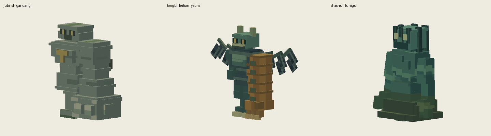
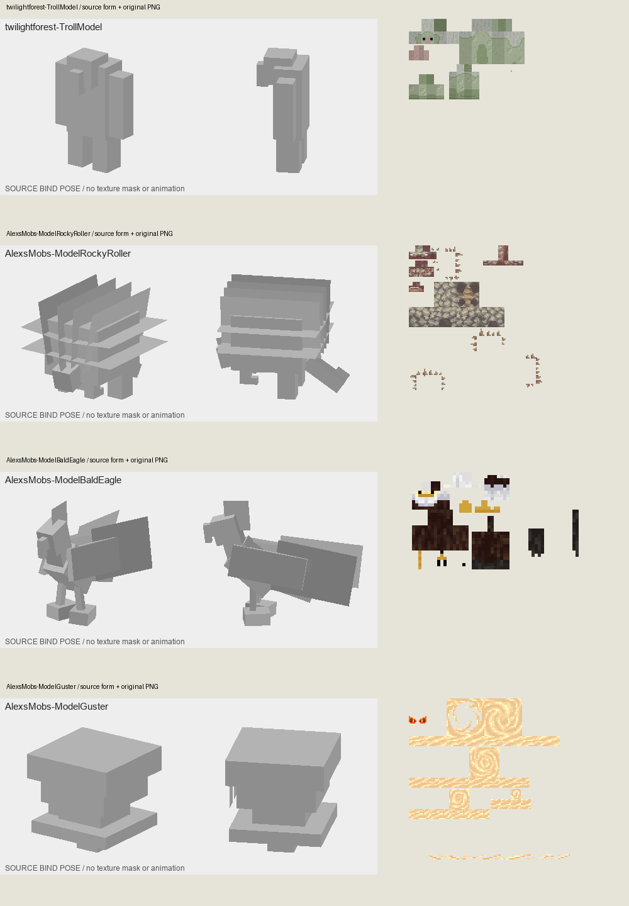

继续三只：石体、铜翼与泥水灵体
此前认可的V37八只、V38三只和上传精英保持不变。保留本批注册、骨架、动作时间轴与玩法。

- 巨臂石敢当：参考暮色巨魔的大躯干/面部主次与Alex Rocky Roller的岩层分区。收薄重复包边、加强腰体连接；连续石层、拳面磨损、顶面苔色与旧金铭文分开。
- 铜臂飞天夜叉：参考Alex白头海雕薄翼和长向羽纹，仅借鉴翼面组织，不改成鹰。收薄翼骨与羽面、铜臂节边；铜臂保留大体量，暗色身体、浅角爪与观察中心形成主次。
- 煞水浮溺鬼：参考Alex Guster在分段躯体上组织连续运动纹样的方法。保留原有水鬼与泥潭结构，连贯青绿流纹、暗色湿发、浅眼和底部沉积物分区，减少衣服镶边感。
本次实际查看的参考
源模型灰模与原始PNG配对查看，不是参考模组的游戏截图。仅学习形体与纹样组织，没有复用外部像素。累计研究未达到1000只。

Alex’s Mobs官方源码 · 暮色森林官方资源源码
检查：21条动画软件回放、UV边界/重叠、骨架兼容、每0.25tick离地边界、制作源可重复导出。